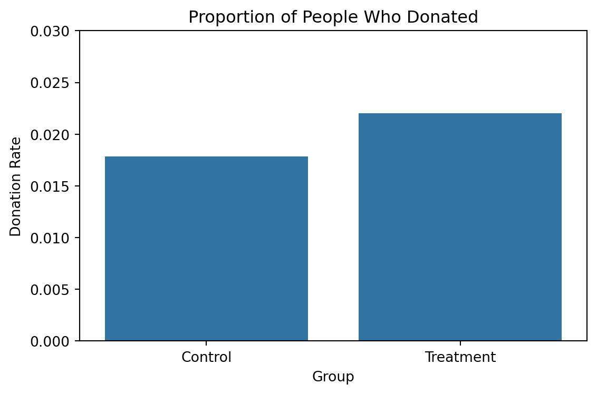
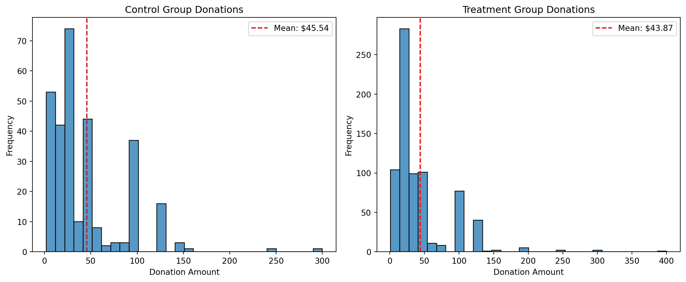
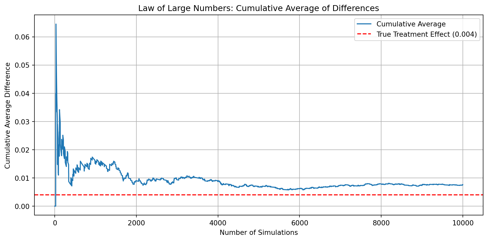

Dean Karlan at Yale and John List at the University of Chicago conducted a field experiment to test the effectiveness of different fundraising letters. They sent out 50,000 fundraising letters to potential donors, randomly assigning each letter to one of three treatments: a standard letter, a matching grant letter, or a challenge grant letter.
Each recipient was randomly assigned to receive one of the following treatments:
A standard solicitation letter (control group)
A letter including a matching donation offer (treatment group)
Variations within the matching group that differed by:
Match ratio (1:1, 2:1, or 3:1)
Maximum match amount ($25k, $50k, $100k, or unstated)
Suggested donation level (e.g., base amount, 1.25x, or 1.5x of prior donation)
The matching grant was framed as coming from a “concerned fellow member” who would match donations received up to a certain amount, providing a perceived multiplier effect to the recipient’s contribution.
This design allowed the authors to explore not only the overall impact of offering a match on donation rates and amounts, but also to test whether the size of the match ratio or the suggested donation amount affected donor behavior.
They published the results of this experiment in the American Economic Review in 2007. The article and supporting data are available from the AEA website and from Innovations for Poverty Action as part of Harvard’s Dataverse.
This project seeks to replicate their results.
Data
Description
Variable Definitions
Variable
Description
treatment
Treatment
control
Control
ratio
Match ratio
ratio2
2:1 match ratio
ratio3
3:1 match ratio
size
Match threshold
size25
$25,000 match threshold
size50
$50,000 match threshold
size100
$100,000 match threshold
sizeno
Unstated match threshold
ask
Suggested donation amount
askd1
Suggested donation was highest previous contribution
askd2
Suggested donation was 1.25 x highest previous contribution
askd3
Suggested donation was 1.50 x highest previous contribution
ask1
Highest previous contribution (for suggestion)
ask2
1.25 x highest previous contribution (for suggestion)
ask3
1.50 x highest previous contribution (for suggestion)
amount
Dollars given
gave
Gave anything
amountchange
Change in amount given
hpa
Highest previous contribution
ltmedmra
Small prior donor: last gift was less than median $35
freq
Number of prior donations
years
Number of years since initial donation
year5
At least 5 years since initial donation
mrm2
Number of months since last donation
dormant
Already donated in 2005
female
Female
couple
Couple
state50one
State tag: 1 for one observation of each of 50 states; 0 otherwise
nonlit
Nonlitigation
cases
Court cases from state in 2004-5 in which organization was involved
statecnt
Percent of sample from state
stateresponse
Proportion of sample from the state who gave
stateresponset
Proportion of treated sample from the state who gave
stateresponsec
Proportion of control sample from the state who gave
stateresponsetminc
stateresponset - stateresponsec
perbush
State vote share for Bush
close25
State vote share for Bush between 47.5% and 52.5%
red0
Red state
blue0
Blue state
redcty
Red county
bluecty
Blue county
pwhite
Proportion white within zip code
pblack
Proportion black within zip code
page18_39
Proportion age 18-39 within zip code
ave_hh_sz
Average household size within zip code
median_hhincome
Median household income within zip code
powner
Proportion house owner within zip code
psch_atlstba
Proportion who finished college within zip code
pop_propurban
Proportion of population urban within zip code
treatment
control
ratio
ratio2
ratio3
size
size25
size50
size100
sizeno
...
redcty
bluecty
pwhite
pblack
page18_39
ave_hh_sz
median_hhincome
powner
psch_atlstba
pop_propurban
0
0
1
Control
0
0
Control
0
0
0
0
...
0.0
1.0
0.446493
0.527769
0.317591
2.10
28517.0
0.499807
0.324528
1.0
1
0
1
Control
0
0
Control
0
0
0
0
...
1.0
0.0
NaN
NaN
NaN
NaN
NaN
NaN
NaN
NaN
2
1
0
1
0
0
$100,000
0
0
1
0
...
0.0
1.0
0.935706
0.011948
0.276128
2.48
51175.0
0.721941
0.192668
1.0
3
1
0
1
0
0
Unstated
0
0
0
1
...
1.0
0.0
0.888331
0.010760
0.279412
2.65
79269.0
0.920431
0.412142
1.0
4
1
0
1
0
0
$50,000
0
1
0
0
...
0.0
1.0
0.759014
0.127421
0.442389
1.85
40908.0
0.416072
0.439965
1.0
5 rows × 51 columns
Balance Test
As an ad hoc test of the randomization mechanism, I provide a series of tests that compare aspects of the treatment and control groups to assess whether they are statistically significantly different from one another.
1. mrm2 (Months Since Last Donation)
We first test whether the treatment and control groups differ significantly in the number of months since their last donation (mrm2). This helps verify whether the randomization process created balanced groups.
(0.0764041463527638, 0.9390978830677066)
The t-test returns a t-statistic of 0.076 and a p-value of 0.939, indicating no statistically significant difference in the mrm2 variable between the two groups.
We also run a regression of mrm2 ~ treatment to confirm the result:
The estimated coefficient on treatment is 0.0088 with a p-value of 0.939, again showing no meaningful difference.
Summary statistics:
mean
std
count
treatment
0
12.984577
12.065892
16339
1
12.993411
12.064867
32632
The table above shows the average number of months since the last donation (mrm2) for each group:
Control group (treatment = 0): 12.98 months
Treatment group (treatment = 1): 12.99 months
The means are nearly identical, differing by only 0.0088 months.
This minimal difference provides strong visual evidence that the groups are balanced on this pre-treatment variable.
Summary Interpretation:
T-test result: t = 0.076, p = 0.939 → No significant difference
Regression: treatment coefficient is 0.0088, also not significant
Conclusion: There is no statistical evidence of a difference in the time since last donation between the treatment and control groups.
2. years (Years Since First Donation)
We now test whether the treatment and control groups differ significantly in the number of years since the individual first donated (years). This variable serves as a proxy for donor loyalty and tenure.
(-1.1939644099545728, 0.23249767383190834)
The t-test returns a t-statistic of -1.194 and a p-value of 0.232, indicating no statistically significant difference in the years variable between the treatment and control groups. This suggests that both groups had similar donation histories prior to the experiment.
We also run a regression of years ~ treatment to confirm the result:
The estimated coefficient on treatment is -0.0631 with a p-value of 0.232, again showing no meaningful difference.
These results support the conclusion that the randomization procedure successfully balanced the groups in terms of how long individuals had been donating to the organization.
mean
std
count
treatment
0
6.140645
5.636459
16339
1
6.077531
5.454186
32632
The table above shows the average number of years since the first donation (years) for each group:
Control group (treatment = 0): 6.14 years
Treatment group (treatment = 1): 6.08 years
The means are nearly identical, differing by only 0.0631 years (approximately 23 days).
This minimal difference provides strong visual evidence that the groups are balanced on this pre-treatment variable, reinforcing the validity of the random assignment.
Summary Interpretation:
T-test result: t = -1.194, p = 0.232 → No significant difference
Regression: treatment coefficient = -0.0631, also not significant
Conclusion: There is no statistical evidence of a difference in donor tenure between the treatment and control groups.
These results confirm that the groups are balanced in terms of donor tenure.
The near-identical averages and the lack of statistically significant difference indicate that the treatment assignment did not disrupt the pre-existing characteristics of the sample.
This supports the internal validity of the experimental design.
3. freq (Number of Prior Donations)
We now test whether the treatment and control groups are balanced in terms of their prior donation frequency (freq). This variable captures how often individuals have previously given and reflects general giving propensity.
(-0.059722457211553545, 0.9523769290955975)
The t-test returns a t-statistic of -0.060 and a p-value of 0.952, indicating no statistically significant difference in the freq variable between the treatment and control groups.
We also run a regression of freq ~ treatment to confirm the result:
The estimated coefficient on treatment is -0.0066 with a p-value of 0.952, again showing no meaningful difference.
mean
std
count
treatment
0
8.068119
11.449873
16339
1
8.061565
11.450896
32632
The table above shows the average number of prior donations (freq) for each group:
Control group (treatment = 0): 8.07 donations
Treatment group (treatment = 1): 8.06 donations
The means are nearly identical, differing by only 0.0066 donations.
This minimal difference provides strong visual and statistical evidence that the groups are balanced on this pre-treatment variable.
Summary Interpretation:
T-test result: t = -0.060, p = 0.952 → No significant difference
Regression: treatment coefficient = -0.0066, p = 0.952 → also not significant
Conclusion: There is no statistical evidence of a difference in prior donation frequency between the groups.
Experimental Results
Charitable Contribution Made
First, I analyze whether matched donations lead to an increased response rate of making a donation. And begin by examining whether the treatment group (those who received a matching donation offer) had a higher probability of making a charitable contribution (gave = 1) than the control group.
treatment
gave
0
Control
0.017858
1
Treatment
0.022039

The bar plot shows a higher donation rate in the treatment group compared to the control group.
This suggests a potential positive effect of matching donations on participation in giving.
I also conduct a t-test to assess whether the difference in donation rates is statistically significant.
(3.1013610005439456, 0.0019274025949016982)
The t-test returns a t-statistic of 3.10 and a p-value of 0.0019, indicating a statistically significant difference between the groups.
This result suggests that the matching donation treatment had a positive effect on the likelihood of giving.
To further investigate the effect of the matching donation offer on donation behavior, we run a simple linear regression where the dependent variable is gave (1 if donated, 0 if not) and the independent variable is treatment (1 = received match offer, 0 = control).
The OLS regression estimates that the coefficient on treatment is 0.0042, with a p-value of 0.002.
This means that being in the treatment group increased the probability of donation by about 0.42 percentage points, and this effect is statistically significant.
This result is consistent with the earlier t-test, which also showed a significant difference between groups.
To more accurately model the binary outcome variable (gave), we also estimate a Probit regression. This approach accounts for the 0/1 nature of the dependent variable and models the probability that an individual donates.
Optimization terminated successfully.
Current function value: 0.100443
Iterations 7
coef
p-value
Intercept
-2.100141
0.000000
treatment
0.086785
0.001852
The estimated coefficient on treatment is 0.0868, with a p-value of 0.002.
This indicates that being assigned to the treatment group significantly increases the probability of donating.
Although the Probit coefficient is not directly interpretable as a marginal effect (like in OLS), the positive sign and low p-value confirm that the treatment effect is positive and statistically significant.
Summary: Charitable Contribution Made
In this section, I analyzed whether offering a matching donation increases the likelihood that individuals donate.
I first compared donation rates between the treatment and control groups using a bar plot. The visual comparison showed a modest increase in the treatment group.
A t-test confirmed that this difference is statistically significant (t = 3.10, p = 0.0019), suggesting that the treatment effect is not due to random chance.
I then estimated an OLS regression of gave ~ treatment, which indicated that being in the treatment group increased donation probability by approximately 0.42 percentage points—a meaningful and significant effect.
Finally, I fit a Probit regression to better model the binary outcome variable. The coefficient on treatment was positive and statistically significant (0.087, p = 0.002), further confirming the effect.
Together, these results provide strong evidence that matching donation offers increase the probability of giving.
NOTE: Linear regression results appear replicate Table 3 column 1 in the paper. Probit results do not, despite Table 3 indicating its results come from probit regressions…
Differences between Match Rates
Next, I assess the effectiveness of different sizes of matched donations on the response rate. To test whether higher match ratios (2:1 and 3:1) are more effective than the baseline 1:1 ratio at encouraging charitable contributions.
2:1 vs 1:1: t = 0.965, p = 0.335 → not significant
3:1 vs 2:1: t = 0.050, p = 0.960 → not significant
These results indicate that there is no statistically significant difference in donation rates between the 1:1 and 2:1 match groups, or between the 2:1 and 3:1 match groups.
The regression estimates a treatment effect of $0.15, with a p-value of 0.063.
This suggests that receiving a matching offer slightly increases the average donation, but the effect is not statistically significant at the 5% level.
2. Analysis Conditional on Giving
Next, I restrict the sample to only those who donated (gave == 1) and repeat the analysis.
(-0.5808388621715499, 0.5614758777919849)
Among donors only, the t-test show a t-statistic of -0.581 and a p-value of 0.561, indicating no statistically significant difference in the donation amounts between the treatment and control groups.
The regression shows that treatment group donors gave $1.67 less on average than control group donors, but this difference is not statistically significant.
3. Visualization: Donation Amount Distribution
I now visualize the donation amounts among those who gave, using histograms for the control and treatment groups.

The control group’s average donation is around $45.54, while the treatment group’s average is $43.87. Visually, the difference is minimal and statistically insignificant.
Conclusion:
There is no strong evidence that receiving a matching donation offer affects the amount given.
While the treatment may slightly increase overall donation amounts in the full sample, it does not lead to significantly larger gifts among those who do donate.
Simulation Experiment
As a reminder of how the t-statistic “works,” in this section I use simulation to demonstrate the Law of Large Numbers and the Central Limit Theorem.
Suppose the true distribution of respondents who do not get a charitable donation match is Bernoulli with probability p=0.018 that a donation is made.
Further suppose that the true distribution of respondents who do get a charitable donation match of any size is Bernoulli with probability p=0.022 that a donation is made.
Law of Large Numbers
This simulation illustrates the concept of sampling error—the difference between the sample average and the true population average due to random variation in finite samples.
By simulating 10,000 donation outcomes from both the control (p = 0.018) and treatment (p = 0.022) groups, we compute the difference between each pair of observations.
I plot the cumulative average of these differences as the number of samples increases.
import numpy as np# Simulation parametersp_control =0.018p_treatment =0.022n_sim =10000# Law of Large Numberscontrol_draws = np.random.binomial(1, p_control, n_sim)treatment_draws = np.random.binomial(1, p_treatment, n_sim)diffs = treatment_draws - control_drawscumulative_avg = np.cumsum(diffs) / np.arange(1, n_sim +1)# Plot cumulative averageplt.figure(figsize=(10, 5))plt.plot(cumulative_avg, label='Cumulative Average')plt.axhline(y=p_treatment - p_control, color='red', linestyle='--', label='True Treatment Effect (0.004)')plt.title('Law of Large Numbers: Cumulative Average of Differences')plt.xlabel('Number of Simulations')plt.ylabel('Cumulative Average Difference')plt.legend()plt.grid(True)plt.tight_layout()plt.show()

The plot shows that the cumulative average difference between treatment and control groups initially fluctuates but gradually stabilizes around 0.004, the true treatment effect.
This demonstrates the Law of Large Numbers: as sample size increases, the sample average converges to the population average.
Central Limit Theorem (CLT)
To illustrate the Central Limit Theorem, I simulate 1,000 average donation differences between treatment and control groups at different sample sizes: 50, 200, 500, and 1000. The goal is to demonstrate how the sampling distribution of the mean becomes more normal and more concentrated as sample size increases.
In this simulation, I repeat the following process 1,000 times for each sample size:
Draw n binary donation outcomes from the control group (p = 0.018)
Draw n binary donation outcomes from the treatment group (p = 0.022)
Compute the mean difference between the two samples
Store and plot the distribution of these mean differences
As the sample size increases, the distribution of mean differences becomes: - More symmetric - More tightly centered - Closer to a bell-shaped (normal) distribution
This is a visual demonstration of the Central Limit Theorem:
Regardless of the underlying distribution, the sampling distribution of the sample mean approaches normality as sample size increases.
By the time n = 1000, the distribution is sharply centered around the true treatment effect (0.004), confirming that larger samples reduce variability and improve the precision of statistical inference.
Also, when sample size ( n > 30 ), the sampling distribution of the mean is typically close enough to normal for t-tests and confidence intervals to be reliable.